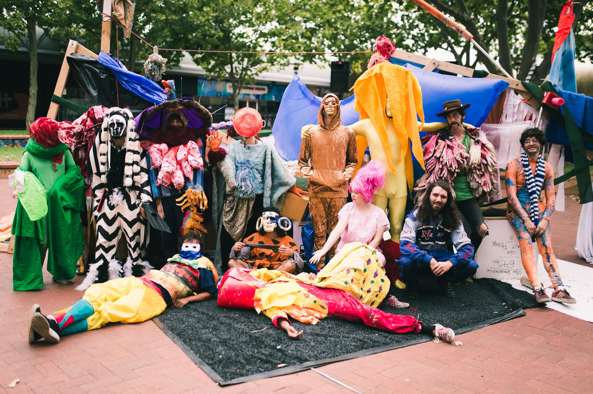
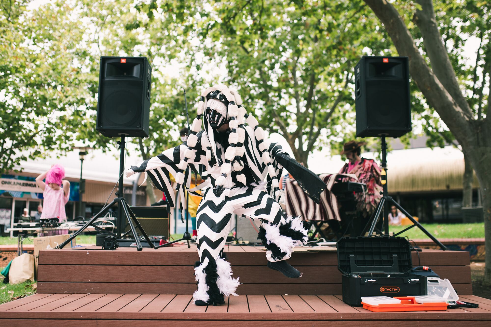
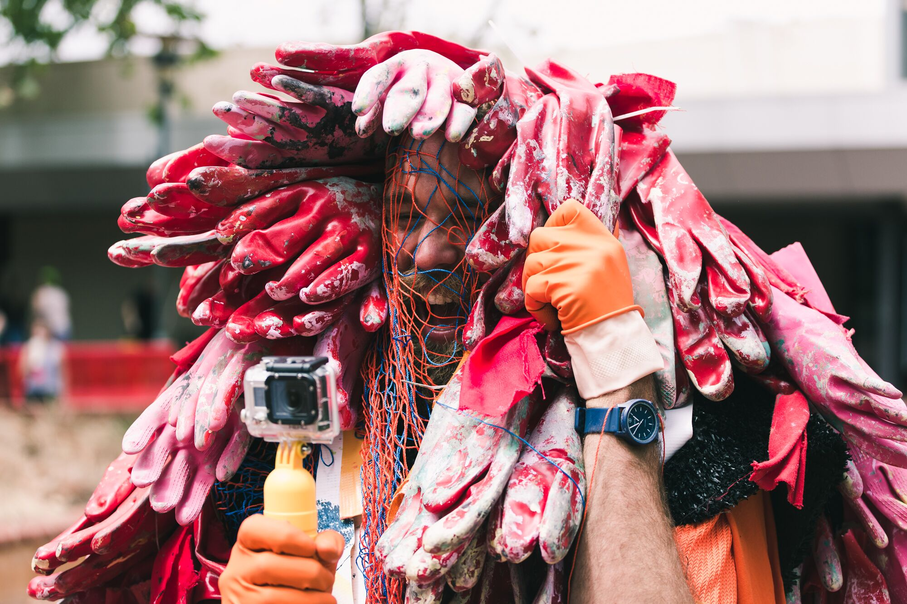
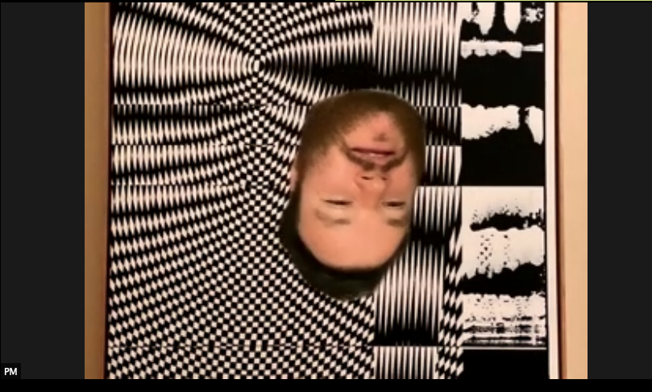
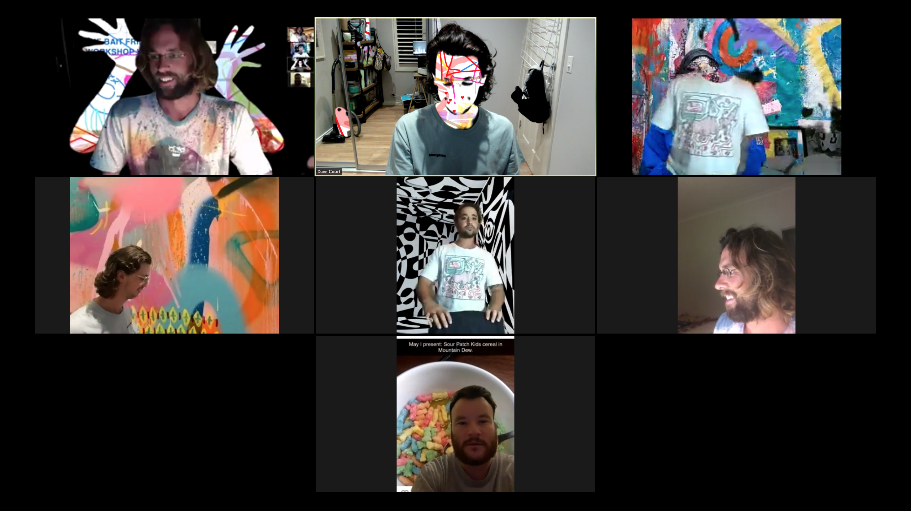

Just a test my friends.
The Bait Fridge is a multi-disciplinary collective from South Australia. They work together to create works and performances which combine their practices under one banner. They make art, music, dance, theatre, photography, and more.
Hello. Welcome. We are The Bait Fridge
A collective of South Australian artists from various disciplines. We work together to create works and performances which combine our practices under one banner. We make art, music, dance, theatre, photography, and more.
It began in the Clare Valley in 2015 at Blenheim Music & Camping Festival. A simple 5 person spontaneous explosion of art and music: A few people throwing paint around and improvising on their instruments. Now there are more than 20 of us, all refined in our own practices and free to explore and collaborate as a collective. We create handmade costumes; interactive art installations; improvised and written musical performances; audience participatory workshops; photography; and all of these combined.
While it all started at Blenheim Festival, we’ve since extended our practice to a range of spaces throughout South Australia. This includes, but is not limited to, running workshops at the Art Gallery of SA; curating SALA’s Finissage Events; performing at the Fringe Club and Field Good Festival; exhibiting at SMOCK gallery; and now, a residency at The Mill.
We hope to use the time of our residency to develop new works and methods of collaboration, while also looking back at what we’ve done in the past. And while the timing of COVID-19 has disrupted our initial plans, The Bait Fridge are an adaptive group and recognise it as an opportunity to work in an unprecedented way. Zoom zoom.
Group Photo
Zebra
Man of Gloves
Zoom Life
Floating Head
Group zoom
Felix Rossbach, Zeno Kordov, Dave Court, Declan Casley-Smith, Greta Wyatt, Adrian Schmidt Mumm, Annabel Scheid, Henry Jock Walker, Liam Sommerville, Tom Hannagan, Arlon Hall, Hari Koutlakis, Mat Morison, Emmaline Zanelli, Kaspar Schmidt Mumm, Daria Koljanin *